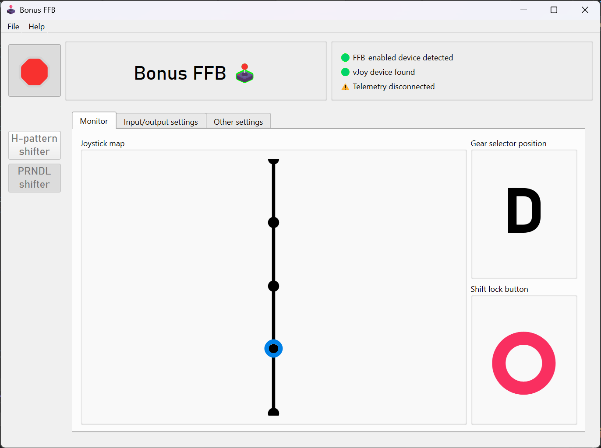
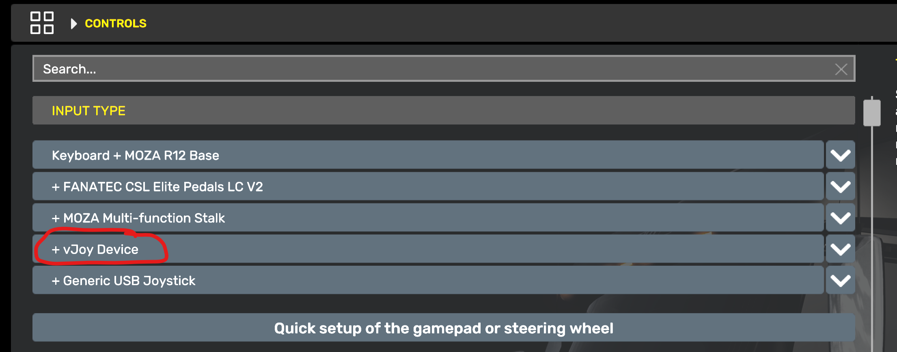

PRNDL
This mode simulates an automatic gear shift lever, colloquially known as a "PRNDL" shifter. It includes optional effects for locking the shifter in park or neutral, a configurable number of slots, and park gear simulation for ATS/ETS2.

Features
Simply move the joystick forward and back to select the desired gear position.
- If a shift lock device is selected in the
Input/output settingstab, the chosen button must be depressed in order to shift out of park. This simulates the shift lock trigger found on all modern automatic vehicles to prevent accidentally shifting from park to reverse.- Similarly, if the
Enable shift lock between Neutral and Reverseoption is enabled, the button must be depressed to shift from neutral to reverse.
- Similarly, if the
- ATS/ETS2 does not have a "park" gear. When ATS/ETS2 telemetry is enabled, "park" is simulated by enabling or disabling the parking brake and setting the gear to neutral. To enable this behavior, ensure the option is enabled in the
Other settingstab.- Alternatively, the park gear can be disabled in the
Other settingstab.
- Alternatively, the park gear can be disabled in the
Game configuration
The PRNDL mode sends vJoy button presses when gears are engaged. Bind the in-game gear slots as you would with a hardware automatic shifter, by walking through the gears slot-by-slot in the game control settings. The input device will show up as the vJoy device you selected in the PRNDL mode's input/output settings.
ATS/ETS2 settings
Set these values in the "Controls" menu:
- In the
Input Typeslist, add the vJoy Device  - Set
Transmissionto any automatic mode
Set these values in the "Keys and buttons" menu:
- Set
Shift To Driveto vJoy button 10 - Set
Shift To Reverseto vJoy button 8 - Set
Shift To Neutralto vJoy button 9 - Set
Parking Braketo vJoy button 7
Settings descriptions
Enable Park slot
This option enables the park slot. ATS/ETS2 does not have a park gear, so if you're not using telemetry, you may want to disable this option.
Enable Low slot
Similar to the above, if your game of choice does not have a low gear, this option should be disabled.
Simulate Park slot in ATS/ETS2 using parking brake telemetry
ATS/ETS2 does not implement a park gear in the game. When this option is enabled and ATS/ETS2 telemetry is active, the PRNDL mode will simulate a park gear by enabling the parking brake and setting the gear to neutral. Disable this option if this behavior is not desired.
Enable shift lock between Neutral and Reverse
When this option is enabled and a shift lock device and button are set in the Input/output settings tab, the shift lock button must be pressed in order to shift from neutral to reverse. (This is in addition to shift lock button's default behavior of preventing shifting from park to reverse.)